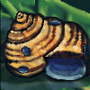
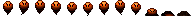
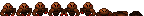

Started: 1st September 2025
Flying, moving and dying. Eventually I want to create a game, think 'Stardew Valley' mixed with a spaceship theme, but that includes minigames. The idea is that this will let me play with different aspects of learning to code whilst making something fun. Quite frankly, I am no where near this level currently, though I have started a couple of Udemy courses to help me learn. One of the ways to keep the enthusiasm going though is to experiment with the sprites I might need.
This meant finding a program that would make this easier, because the basic 'Paint' app was a little irritating. Being a skinflint I went for Pixilart which has a couple of features that make it helpful. To get used to it I had a go at the daily challenge: Snail Shell, and produced this:
Later I made initial efforts at sprites for the two most basic enemy mobs which I have imaginatively named 'Flyer' and 'Crawler'.
 